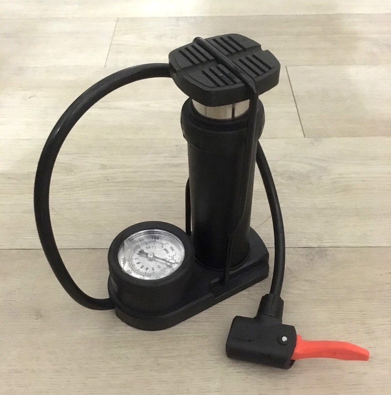
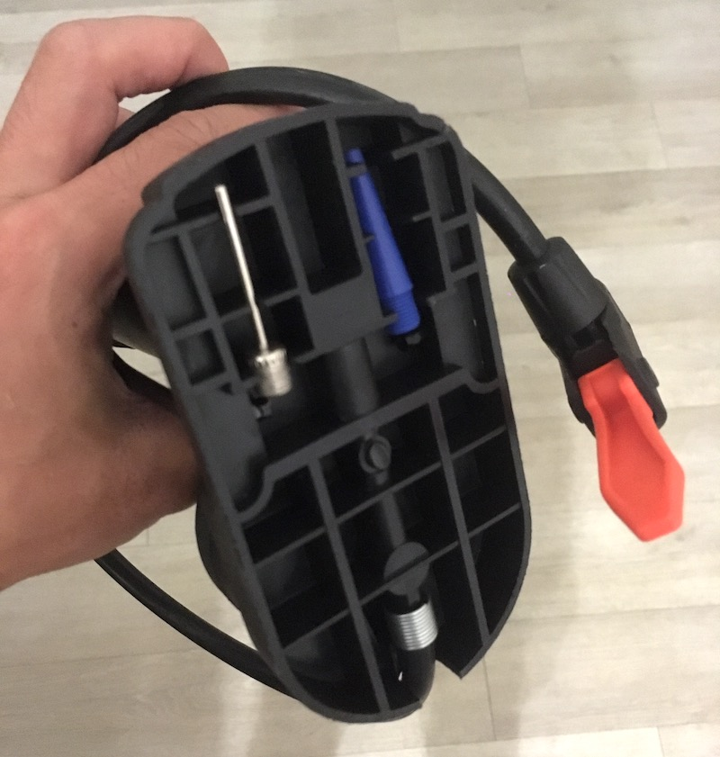

打氣筒設計觀察¶
因為平常會騎腳踏車通勤跟打排球，所以需要定期幫輪胎和排球充氣，索性買了一個主打「一筒多用」的平價打氣筒，一次滿足兩種不同生活情境。
雖然這款產品的品質終究反應在價格上，但以不到五百塊的售價來說，我也覺得很超值了。
除此之外，這款產品還有個令我出乎意料的設計巧思。
因為不同物件會需要使用相對應的氣嘴，所以打氣筒本身也提供了氣嘴們的收納空間。而這個收納空間很巧妙地隱藏在底座下方。這個底座下方原先是為了確保物理強度，不得不加上的支撐肋條，理論上來說是個材料限制的妥協。但是只要在肋條上適當挖掉一小部分，這些空間剛好就成了可以讓氣嘴穩穩鑲嵌進去的凹槽。


這個設計讓我想到 iPhone 的「動態島」；透過介面設計把硬體限制變成一個新功能，直接把鏡頭所在的黑色區域變成訊息顯示的區域。關於這個設計，Fred 大的這篇文章有更全面的觀點。
說穿了其實兩者都沒太多高深的技術含量，但不管是氣嘴收納或是動態島，這些設計巧思是跳脫既有觀點後，並對使用者行為和需求深刻理解的成果。硬要把限制變功能，只會變成是設計師的自嗨。